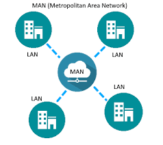

| Redes | Direcciòn IP | Clasificaciòn de redes por cobertua | Topologias | Tipos de cables utp/stp |
|---|
Por su Cobertura
Pan
(Personal Area Network), también conocido como Redes de Área Personal
LAN
(Local Area Network) también conocido como Redes de Área Local
| Redes | Direcciòn IP | Clasificaciòn de redes por cobertua | Topologias | Tipos de cables utp/stp |
|---|
(Personal Area Network), también conocido como Redes de Área Personal
(Local Area Network) también conocido como Redes de Área Local
(Campus Area Network) también conocido como Redes de Área de Campus
N(Metropolitan Area Network) también conocido como Redes de Área Metropolitana
(Wide Area Network) también conocidas como Redes de Área Amplia